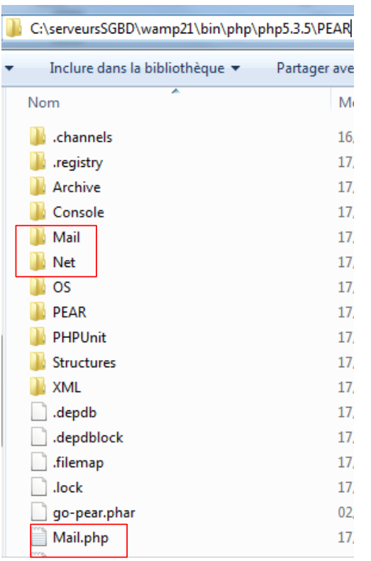

9. Les fonctions réseau de PHP
Nous abordons maintenant les fonctions réseau de PHP qui nous permettent de faire de la programmation TCP / IP (Transfer Control Protocol / Internet Protocol).
9.1. Obtenir le nom ou l'adresse IP d'une machine de l'Internet (inet_01)
<?php
// fonctions nom Machine <--> adresse IP machine
ini_set("display_errors", "off");
// constantes
$HOTES = array("istia.univ-angers.fr", "www.univ-angers.fr", "www.ibm.com", "localhost", "", "xx");
// adresses IP des machines de $HOTES
for ($i = 0; $i < count($HOTES); $i++) {
getIPandName($HOTES[$i]);
}
// fin
exit;
//------------------------------------------------
function getIPandName($nomMachine) {
//$nomMachine : nom de la machine dont on veut l'adresse IP
// nomMachine-->adresse IP
$ip = gethostbyname($nomMachine);
if ($ip != $nomMachine) {
print "ip[$nomMachine]=$ip\n";
// adresse IP --> nomMachine
$name = gethostbyaddr($ip);
if ($name != $ip) {
print "name[$ip]=$name\n";
} else {
print "Erreur, machine[$ip] non trouvée\n";
}
} else {
print "Erreur, machine[$nomMachine] non trouvée\n";
}
}
Résultats :
ip[istia.univ-angers.fr]=193.49.146.171
name[193.49.146.171]=istia.istia.univ-angers.fr
ip[www.univ-angers.fr]=193.49.144.40
name[193.49.144.40]=ametys-fo.univ-angers.fr
ip[www.ibm.com]=129.42.56.216
Erreur, machine[129.42.56.216] non trouvée
ip[localhost]=127.0.0.1
name[127.0.0.1]=localhost127.0.0.1
ip[]=192.168.1.11
name[192.168.1.11]=st-PC.home
Erreur, machine[xx] non trouvée
Commentaires
- ligne 4 : on demande à ce que les erreurs d'exécution ne soient pas affichées.
Les fonctions réseau de PHP sont utilisées dans la fonction getIpandName de la ligne 15.
- ligne 18 : la fonction gethostbyname($nom) permet d'obtenir l'adresse IP "ip3.ip2.ip1.ip0" de la machine s'appelant $nom. Si la machine $nom n'existe pas, la fonction rend $nom comme résultat.
- ligne 22 : la fonction gethostbyaddr($ip) permet d'obtenir le nom de la machine d'adresse $ip de la forme "ip3.ip2.ip1.ip0". Si la machine $ip n'existe pas, la fonction rend $ip comme résultat.
9.2. Un client web (inet_02)
Un script permettant d'avoir le contenu de la page index d'un site web.
<?php
// gestion des erreurs
ini_set("display_errors","off");
// otenir le texte HTML d'URL
// liste de sites web
$SITES = array("istia.univ-angers.fr", "www.univ-angers.fr", "www.ibm.com", "xx");
// lecture des pages index des sites du tableau $SITES
for ($i = 0; $i < count($SITES); $i++) {
// lecture page index du site $SITES[$i]
$résultat = getIndex($SITES[$i]);
// affichage résultat
print "$résultat\n";
}//for
// fin
exit;
//-----------------------------------------------------------------------
function getIndex($site) {
// lit l'URL $site/ et la stocke dans le fichier $site.html
// création du fichier $site.html
$html = fopen("$site.html", "w");
if (!$html)
return "Erreur lors de la création du fichier $site.html";
// ouverture d'une connexion sur le port 80 de $site
$connexion = fsockopen($site, 80);
// retour si erreur
if (!$connexion)
return "Echec de la connexion au site ($site,80) : $erreur";
// $connexion représente un flux de communication bidirectionnel
// entre le client (ce programme) et le serveur web contacté
// ce canal est utilisé pour les échanges de commandes et d'informations
// le protocole de dialogue est HTTP
// le client envoie la commande get pour demander l'URL /
// syntaxe get URL HTTP/1.0
// les entêtes (headers) du protocole HTTP doivent se terminer par une ligne vide
fputs($connexion, "GET / HTTP/1.0\n\n");
// le serveur va maintenant répondre sur le canal $connexion. Il va envoyer toutes
// ces données puis fermer le canal. Le client lit donc tout ce qui arrive de $connexion
// jusqu'à la fermeture du canal
while ($ligne = fgets($connexion, 1000))
fputs($html, $ligne);
// le client ferme la connexion à son tour
fclose($connexion);
// fermeture du fichier $html
fclose($html);
// retour
return "Transfert réussi de la page index du site $site";
}
Résultats : par exemple, le fichier reçu pour le site [www.ibm.com] :
- les lignes 1-11 sont les entêtes HTTP de la réponse du serveur
- ligne 1 : le serveur demande au client de se rediriger vers l'URL indiquée ligne 8
- ligne 2 : date et heure de la réponse
- ligne 3 : identité du serveur web
- ligne 4 : contenu envoyé par le serveur. Ici une page HTML qui commence ligne 13
- ligne 12 : la ligne vide qui termine les entêtes HTTP
- lignes 13-19 : la page HTML envoyée par le serveur web.
Commentaires du code :
- ligne 7 : la liste des Url des sites web dont on veut la page index. Celle-ci sera stockée dans le fichier texte [nomsite.html].
- ligne 11 : la fonction getIndex fait le travail
- ligne 19 : la fonction getIndex($site) télécharge la page racine (ou page index) du site web $site et la stocke dans le fichier texte $site.html.
- ligne 27 : la fonction fsockopen($site,$port) permet de créer une connexion avec un service TCP / IP travaillant sur le port $port de la machine $site. Une fois la connexion client / serveur ouverte, de nombreux services TCP / IP échangent des lignes de texte. C'est le cas ici du protocole HTTP (HyperText Transfer Protocol). Le flux du serveur parvenant au client peut alors être traité comme un fichier texte. Il en est de même pour le flux partant du client vers le serveur.
- ligne 38 : la fonction fputs permet au client d'envoyer des données au serveur. Ici la ligne de texte envoyée a la signification suivante : "Je veux (GET) la page racine (/) du site web auquel je suis connecté. Je travaille avec le protocole HTTP version 1.0". La version actuelle de ce protocole est 1.1.
- ligne 42 : les lignes de texte de la réponse du serveur peuvent être lues ligne par ligne avec une boucle while et enregistrées dans le fichier texte [$site.html]. Lorsque le serveur web a envoyé la page qu'on lui a demandée, il ferme sa connexion avec le client. Côté client, cela sera détecté comme une fin de fichier.
9.3. Un client smtp (inet_03)
Parmi les protocoles TCP / IP, SMTP (SendMail Transfer Protocol) est le protocole de communication du service d'envoi de messages.
Notes :
- sur une machine Windows possédant un antivirus, ce dernier empêchera probablement au script PHP de se connecter au port 25 d'un serveur SMTP. Il faut alors désactiver l'antivirus. Pour McAfee par exemple, on peut procéder ainsi :
 |
- en [1], on active la console VirusScan
- en [2], on arrête le service [Protection lors de l'accès]
- en [3], il est arrêté
Le script :
<?php
// client SMTP (SendMail Transfer Protocol) permettant d'envoyer un message
// les infos sont prises dans un fichier $INFOS contenant les lignes suivantes
// ligne 1 : smtp, expéditeur, destinataire
// lignes suivantes : le texte du message
// expéditeur: email expéditeur
// destinataire: email destinataire
// smtp: nom du serveur smtp à utiliser
// protocole de communication SMTP client-serveur
// -> client se connecte sur le port 25 du serveur smtp
// <- serveur lui envoie un message de bienvenue
// -> client envoie la commande EHLO: nom de sa machine
// <- serveur répond OK ou non
// -> client envoie la commande mail from: <expéditeur>
// <- serveur répond OK ou non
// -> client envoie la commande rcpt to: <destinataire>
// <- serveur répond OK ou non
// -> client envoie la commande data
// <- serveur répond OK ou non
// -> client envoie ttes les lignes de son message et termine avec une ligne contenant le
// seul caractère .
// <- serveur répond OK ou non
// -> client envoie la commande quit
// <- serveur répond OK ou non
// les réponses du serveur ont la forme xxx texte où xxx est un nombre à 3 chiffres. Tout nombre xxx >=500
// signale une erreur. La réponse peut comporter plusieurs lignes commençant toutes par xxx sauf la dernière
// de la forme xxx(espace)
// les lignes de texte échangées doivent se terminer par les caractères RC(#13) et LF(#10)
// données
$INFOS = "mail.txt"; // les paramètres de l'envoi du courrier
// on récupère les paramètres du courrier
list($erreur, $smtpServer, $expéditeur, $destinataire, $message) = getInfos($INFOS);
// erreur ?
if ($erreur) {
print "$erreur\n";
exit;
}
print "Envoi du message [$smtpServer,$expéditeur,$destinataire]\n";
// envoi du courrier en mode verbeux
$résultat = sendmail($smtpServer, $expéditeur, $destinataire, $message, 1);
print "Résultat de l'envoi : $résultat\n";
// fin
exit;
//-----------------------------------------------------------------------
function getInfos($fichier) {
// rend les informations ($smtp,$expéditeur,$destinataire,$message) prises dans le fichier texte $fichier
// ligne 1 : smtp, expéditeur, destinataire
// lignes suivantes : le texte du message
// ouverture de $fichier
$infos = fopen($fichier, "r");
// le fichier $fichier existe-t-il
if (!$infos)
return array("Le fichier $fichier n'a pu être ouvert en lecture");
// lecture de la 1ère ligne
$ligne = fgets($infos, 1000);
// suppression de la marque de fin de ligne
$ligne = cutNewLineChar($ligne);
// récupération des champs smtp,expéditeur,destinataire
$champs = explode(",", $ligne);
// a-t-on le bon nombre de champs ?
if (count($champs) != 3)
return "La ligne 1 du fichier $fichier (serveur smtp, expéditeur, destinataire) a un
nombre de champs incorrect";
// "traitement" des informations récupérées
for ($i = 0; $i < count($champs); $i++)
$champs[$i] = trim($champs[$i]);
// récupération des champs
list($smtpServer, $expéditeur, $destinataire) = $champs;
// lecture message
$message = "";
while ($ligne = fgets($infos, 1000))
$message.=$ligne;
fclose($infos);
// retour
return array("", $smtpServer, $expéditeur, $destinataire, $message);
}
//-----------------------------------------------------------------------
function sendmail($smtpServer, $expéditeur, $destinataire, $message, $verbose) {
// envoie $message au serveur smtp $smtpserver de la part de $expéditeur
// pour $destinataire. Si $verbose=1, fait un suivi des échanges client-serveur
// on récupère le nom du client
$client = gethostbyaddr(gethostbyname(""));
// ouverture d'une connexion sur le port 25 de $smtpServer
$connexion = fsockopen($smtpServer, 25);
// retour si erreur
if (!$connexion)
return "Echec de la connexion au site ($smtpServer,25)";
// $connexion représente un flux de communication bidirectionnel
// entre le client (ce programme) et le serveur smtp contacté
// ce canal est utilisé pour les échanges de commandes et d'informations
// après la connexion le serveur envoie un message de bienvenue qu'on lit
$erreur = sendCommand($connexion, "", $verbose, 1);
if ($erreur) {
fclose($connexion);
return $erreur;
}
// cmde ehlo:
$erreur = sendCommand($connexion, "EHLO $client", $verbose, 1);
if ($erreur) {
fclose($connexion);
return $erreur;
}
// cmde mail from:
$erreur = sendCommand($connexion, "MAIL FROM: <$expéditeur>", $verbose, 1);
if ($erreur) {
fclose($connexion);
return $erreur;
}
// cmde rcpt to:
$erreur = sendCommand($connexion, "RCPT TO: <$destinataire>", $verbose, 1);
if ($erreur) {
fclose($connexion);
return $erreur;
}
// cmde data
$erreur = sendCommand($connexion, "DATA", $verbose, 1);
if ($erreur) {
fclose($connexion);
return $erreur;
}
// préparation message à envoyer
// il doit contenir les lignes
// From: expéditeur
// To: destinataire
// ligne vide
// Message
// .
$data = "From: $expéditeur\r\nTo: $destinataire\r\n$message\r\n.\r\n";
$erreur = sendCommand($connexion, $data, $verbose, 0);
if ($erreur) {
fclose($connexion);
return $erreur;
}
// cmde quit
$erreur = sendCommand($connexion, "QUIT", $verbose, 1);
if ($erreur) {
fclose($connexion);
return $erreur;
}
// fin
fclose($connexion);
return "Message envoyé";
}
// --------------------------------------------------------------------------
function sendCommand($connexion, $commande, $verbose, $withRCLF) {
// envoie $commande dans le canal $connexion
// mode verbeux si $verbose=1
// si $withRCLF=1, ajoute la séquence RCLF à échange
// données
if ($withRCLF)
$RCLF = "\r\n"; else
$RCLF="";
// envoi cmde si $commande non vide
if ($commande) {
fputs($connexion, "$commande$RCLF");
// écho éventuel
if ($verbose)
affiche($commande, 1);
}//if
// lecture réponse
$réponse = fgets($connexion, 1000);
// écho éventuel
if ($verbose)
affiche($réponse, 2);
// récupération code erreur
$codeErreur = substr($réponse, 0, 3);
// dernière ligne de la réponse ?
while (substr($réponse, 3, 1) == "-") {
// lecture réponse
$réponse = fgets($connexion, 1000);
// écho éventuel
if ($verbose)
affiche($réponse, 2);
}//while
// réponse terminée
// erreur renvoyée par le serveur ?
if ($codeErreur >= 500)
return substr($réponse, 4);
// retour sans erreur
return "";
}
// --------------------------------------------------------------------------
function affiche($échange, $sens) {
// affiche $échange à l'écran
// si $sens=1 affiche -->$echange
// si $sens=2 affiche <-- $échange sans les 2 derniers caractères RCLF
switch ($sens) {
case 1:
print "--> [$échange]\n";
return;
case 2:
$L = strlen($échange);
print "<-- [" . substr($échange, 0, $L - 2) . "]\n";
return;
}//switch
}
// --------------------------------------------------------------------------
function cutNewLinechar($ligne) {
// on supprime la marque de fin de ligne de $ligne si elle existe
...
}
Le fichier infos.txt :
- ligne 1 : [smtp.orange.fr] le serveur utilisé pour l'envoi du courrier, [serge.tahe@univ-angers.fr] l'adresse de l'expéditeur, [serge.tahe@istia.univ-angers.fr] l'adresse du destinataire
- ligne 2 : entêtes du message. Ici il n'y en a qu'un, celui du sujet du message.
- ligne 3 : la ligne vide termine les entêtes du message
- lignes 4-7 : le texte du message
Les résultats écran :
- ligne 1 : message de suivi d'exécution du script
- ligne 2 : première réponse du serveur smtp. Elle fait suite à la connexion du client sur le port 25 du serveur smtp. Les réponses du serveur sont des lignes de la forme [xxx message] ou [xxx-message]. La première syntaxe indique que la réponse est terminée. xxx est un code de résultat. Une valeur supérieure ou égale à 500 signale une erreur. La seconde syntaxe indique que la réponse n'est pas terminée et qu'une autre ligne va suivre.
- ligne 2 : le serveur smtp indique qu'il est prêt à recevoir des commandes
- ligne 3 : le client envoie la commande [EHLO nomDeMachine] où nomDeMachine est le nom internet de la machine sur laquelle s'exécute le client
- lignes 4-10 : réponse du serveur smtp
- ligne 11 : le client envoie la commande [MAIL FROM: <expéditeur>] qui indique l'adresse mail de l'expéditeur.
- ligne 12 : le serveur smtp indique qu'il accepte cette adresse. Il aurait pu la refuser si sa syntaxe avait été incorrecte. Ceci dit, il ne pas vérifie que l'adresse électronique existe vraiment.
- ligne 13 : le client envoie la commande [RCPT TO: <destinataire>] qui indique l'adresse mail du destinataire du message.
- ligne 14 : le serveur smtp répond qu'il accepte cette adresse. Là encore, une vérification syntaxique est faite.
- ligne 15 : le client envoie la commande [DATA] qui indique à l'utilisateur que les lignes qui vont suivre sont celles du message.
- ligne 16 : le serveur répond que le message peut être envoyé. Celui-ci est une suite de lignes de texte qui doit se terminer par une ligne formée d'un seul caractère, un point.
- lignes 17-25 : le message envoyé par le client
- lignes 17- 19 : les entêtes du message [From:, To:, Subject:] servent à indiquer respectivement l'expéditeur, le destinataire et le sujet du message.
- ligne 20 : ligne vide qui signale la fin des entêtes
- lignes 21-23 : le corps du message
- ligne 24 : la ligne formée d'un unique point qui signale la fin du message.
- ligne 26 : le serveur smtp répond qu'il accepte le message
- ligne 27 : le client envoie la commande [QUIT] pour indiquer qu'il a terminé
- ligne 28 : le serveur smtp lui répond qu'il va fermer la connexion qui le lie au client
Commentaires du code
Nous détaillerons peu le code du script car il a été abondamment commenté.
- lignes 48-80 : la fonction qui exploite le fichier [infos.txt] qui contient le message à envoyer ainsi que les informations nécessaires à cet envoi. Elle rend un tableau ($erreur, $smtpServer, $expéditeur, $destinataire, $messge) avec :
- $erreur : un message d'erreur éventuel, vide sinon.
- $smtpServer : le nom du serveur smtp auquel il faut se connecter
- $expéditeur : l'adresse mail de l'expéditeur
- $destinataire : l'adresse mail du destinataire
- $message : le message à envoyer. Outre le corps du message, il peut y avoir des entêtes.
- lignes 84-157 : la fonction sendMail se charge d'envoyer le message. Ses paramètres sont les suivants :
- $smtpServer : le nom du serveur smtp auquel il faut se connecter
- $expéditeur : l'adresse mail de l'expéditeur
- $destinataire : l'adresse mail du destinataire
- $message : le message à envoyer.
- $verbose : à 1 indique que les échanges avec le serveur smtp doivent être reproduits sur la console.
La fonction sendMail rend un message d'erreur, vide s'il n'y a pas eu d'erreur.
- ligne 88 : permet d'obtenir le nom windows d'un ordinateur opérant avec l'OS windows.
- ligne 99 : nous avons vu que le dialogue client / serveur était une suite de la forme :
- envoi par le client d'une commande sur une ligne
- réponse du serveur sur une ou plusieurs lignes
- lignes 161-208 : la fonction sendCommand admet les paramètres suivants :
- $connexion : le canal TCP / IP qui lie le client au serveur
- $commande : la commande à envoyer sur ce canal. La réponse du serveur à cette commande sera lue.
- $verbose : à 1 indique que les échanges avec le serveur smtp doivent être reproduits sur la console.
- $withRCLF : à 1 indique qu'il faut ajouter la marque de fin de ligne "\r\n" à la fin de la commande
- ligne 173 : envoi de la commande par le client
- ligne 181 : lecture de la première ligne de la réponse du serveur smtp de la forme xxx texte ou xxx-texte. Ce dernier cas indique que le serveur a une autre ligne à envoyer. xxx est le code d'erreur envoyé par le serveur.
- ligne 188 – récupération du code d'erreur de la réponse
- lignes 191-199 : lecture des autres lignes de la réponse
- lignes 203-204 : si le code d'erreur est >=500, alors c'est que le serveur smtp signale une erreur.
9.4. Un second programme d'envoi de mail (inet_04)
Ce script a la même fonctionnalité que le précédent : envoyer un mail. Nous utilisons pour cela des modules de la bibliothèque PEAR. Cette bibliothèque comporte des dizaines de modules couvrant différents domaines. Nous allons utiliser les suivants :
- Net/SMTP : un module permettant de dialoguer avec un serveur SMTP
- Mail : un module permettant de gérer l'envoi d'un mail selon différents protocoles.
- Mail/Mime : un module permettant de créer un message qui peut comporter des documents attachés.
Pour disposer de ces modules, il faut d'abord les installer sur la machine exécutant le script PHP. L'installation du paquetage logiciel WampServer a installé un interpréteur PHP. Dans l'arborescence de celui-ci, il est possible d'installer des modules PEAR.
 |
- en [1], le dossier d'installation de l'interpréteur PHP
- en [2], le dossier PEAR qui contiendra les modules PEAR qui vont être installés
- en [3], le fichier de commandes [go-pear.bat] qui initialise la bibliothèque PEAR
Pour initialiser la bibliothèque PEAR, on ouvre une fenêtre DOS et on exécute le fichier [go-pear.bat]. Ce script va se connecter au site internet de la bibliothèque PEAR. Il faut donc une connexion internet.
Connecté au site internet de la bibliothèque PEAR, le script va télécharger un certain nombre d'éléments. Parmi ceux-ci, un nouveau script [pear.bat]. C'est avec ce script qu'on va installer les différents modules PEAR dont nous avons besoin. Ce script s'appelle avec des arguments. Parmi ceux-ci l'argument [help] permet d'avoir une liste des commandes acceptées par le script :
C:\serveursSGBD\wamp21\bin\PHP\php5.3.5>pear help
Commands:
build Build an Extension From C Source
bundle Unpacks a Pecl Package
channel-add Add a Channel
channel-alias Specify an alias to a channel name
channel-delete Remove a Channel From the List
channel-discover Initialize a Channel from its server
channel-info Retrieve Information on a Channel
channel-login Connects and authenticates to remote channel server
channel-logout Logs out from the remote channel server
channel-update Update an Existing Channel
clear-cache Clear Web Services Cache
config-create Create a Default configuration file
config-get Show One Setting
config-help Show Information About Setting
config-set Change Setting
config-show Show All Settings
convert Convert a package.xml 1.0 to package.xml 2.0 format
cvsdiff Run a "cvs diff" for all files in a package
cvstag Set CVS Release Tag
download Download Package
download-all Downloads each available package from the default channel
info Display information about a package
install Install Package
list List Installed Packages In The Default Channel
list-all List All Packages
list-channels List Available Channels
list-files List Files In Installed Package
list-upgrades List Available Upgrades
login Connects and authenticates to remote server [Deprecated i
n favor of channel-login]
logout Logs out from the remote server [Deprecated in favor of c
hannel-logout]
makerpm Builds an RPM spec file from a PEAR package
package Build Package
package-dependencies Show package dependencies
package-validate Validate Package Consistency
pickle Build PECL Package
remote-info Information About Remote Packages
remote-list List Remote Packages
run-scripts Run Post-Install Scripts bundled with a package
run-tests Run Regression Tests
search Search remote package database
shell-test Shell Script Test
sign Sign a package distribution file
svntag Set SVN Release Tag
uninstall Un-install Package
update-channels Update the Channel List
upgrade Upgrade Package
upgrade-all Upgrade All Packages [Deprecated in favor of calling upgr
ade with no parameters]
Usage: pear [options] command [command-options] <parameters>
Type "pear help options" to list all options.
Type "pear help shortcuts" to list all command shortcuts.
Type "pear help <command>" to get the help for the specified command.
La commande [install] permet d'installer des modules PEAR. On peut demander de l'aide sur la commande [install] :
C:\serveursSGBD\wamp21\bin\PHP\php5.3.5>pear help install
pear install [options] [channel/]<package> ...
Installs one or more PEAR packages. You can specify a package to install in four ways:
"Package-1.0.tgz" : installs from a local file
"http://example.com/Package-1.0.tgz" : installs from anywhere on the net.
"package.xml" : installs the package described in package.xml. Useful for testing, or for wrapping a PEAR package in another package manager such as RPM.
"Package[-version/state][.tar]" : queries your default channel's server(pear.php.net) and downloads the newest package with the preferred quality/state (stable).
To retrieve Package version 1.1, use "Package-1.1," to retrieve Package state beta, use "Package-beta." To retrieve an uncompressed file, append .tar (make sure there is no file by the same name first)
To download a package from another channel, prefix with the channel name like "channel/Package"
More than one package may be specified at once. It is ok to mix these four ways of specifying packages.
Options:
-f, --force
will overwrite newer installed packages
-l, --loose
do not check for recommended dependency version
-n, --nodeps
ignore dependencies, install anyway
-r, --register-only
do not install files, only register the package as installed
-s, --soft
soft install, fail silently, or upgrade if already installed
-B, --nobuild
don't build C extensions
-Z, --nocompress
request uncompressed files when downloading
-R DIR, --installroot=DIR
root directory used when installing files (ala PHP's INSTALL_ROOT), use packagingroot for RPM
-P DIR, --packagingroot=DIR
root directory used when packaging files, like RPM packaging
--ignore-errors
force install even if there were errors
-a, --alldeps
install all required and optional dependencies
-o, --onlyreqdeps
install all required dependencies
-O, --offline
do not attempt to download any urls or contact channels
-p, --pretend
Only list the packages that would be downloaded
Les modules PEAR à installer sont les suivants : [Mail], [Mail_Mime], [Net_SMTP]. Dans la fenêtre Dos, on tapera successivement les commandes suivantes :
<PHP_installDir>pear install Mail
...
<PHP_installDir>pear install Mail_Mime
…
<PHP_installDir>pear install Net_SMTP
…
où <PHP_installDir> est le dossier d'installation de l'interpréteur PHP (C:\serveursSGBD\wamp21\bin\PHP\php5.3.5 dans cet exemple)
On peut voir les modules installés :
C:\serveursSGBD\wamp21\bin\PHP\php5.3.5>pear list
INSTALLED PACKAGES, CHANNEL PEAR.php.NET:
=========================================
PACKAGE VERSION STATE
Archive_Tar 1.3.7 stable
Console_Getopt 1.3.1 stable
Mail 1.2.0 stable
Mail_Mime 1.8.1 stable
Net_SMTP 1.6.0 stable
Net_Socket 1.0.10 stable
PEAR 1.9.4 stable
PHPUnit 1.3.2 stable
Structures_Graph 1.0.4 stable
XML_Util 1.2.1 stable
Les modules sont installés dans le dossier <PHP_installDir>/PEAR :
 |
Avec les modules PEAR installés, le script PHP d'envoi de mail devient le suivant :
<?php
// gestion des erreurs
ini_set("display_errors", "off");
// modules
ini_set("include_path", ".;C:\serveursSGBD\wamp21\bin\PHP\php5.3.5\PEAR");
require_once "Mail.php";
require_once "Mail/Mime.php";
require_once "Net/SMTP.php";
// client SMTP (SendMail Transfer Protocol) permettant d'envoyer un message
// les infos sont prises dans un fichier $INFOS contenant les lignes suivantes
// ligne 1 : smtp, expéditeur, destinataire, attachement
// lignes suivantes : le texte du message
// expéditeur:email expéditeur
// destinataire: email destinataire
// smtp: nom du serveur smtp à utiliser
// attachement : nom du document à attacher
//
// données
$INFOS = "mail2.txt"; // les paramètres de l'envoi du courrier
// on récupère les paramètres du courrier
list($erreur, $smtpServer, $expéditeur, $destinataire, $message, $sujet, $attachement) = getInfos($INFOS);
// erreur ?
if ($erreur) {
print "$erreur\n";
exit;
}
print "Envoi du message [$smtpServer,$expéditeur,$destinataire,$sujet, $attachement]\n";
// envoi du courrier en mode verbeux
$résultat = sendmail($smtpServer, $expéditeur, $destinataire, $message, $sujet, $attachement);
print "Résultat de l'envoi : $résultat\n";
// fin
exit;
//-----------------------------------------------------------------------
function getInfos($fichier) {
// rend les informations ($smtp,$expéditeur,$destinataire,$message, $sujet, $attachement) prises dans le fichier texte $fichier
// ligne 1 : smtp, expéditeur, destinataire, sujet, attachement
// lignes suivantes : le texte du message
...
// retour
return array("", $smtpServer, $expéditeur, $destinataire, $message, $sujet, $attachement);
}
//getInfos
//-----------------------------------------------------------------------
function sendmail($smtpServer, $expéditeur, $destinataire, $message, $sujet, $attachement) {
// envoie $message au serveur smtp $smtpserver de la part de $expéditeur
// pour $destinataire. Le document $attachement est joint au message
// le message a le sujet $sujet
//
// message
$msg = new Mail_Mime();
$msg->setTXTBody($message);
$msg->addAttachment($attachement);
$headers = $msg->headers(array("From" => $expéditeur, "To" => $destinataire, "Subject" => $sujet));
// envoi
$mailer = &Mail::factory("smtp", array("host" => $smtpServer, "port" => 25));
$envoi = $mailer->send($expéditeur, $headers, $msg->get());
if ($envoi === TRUE) {
return "Message envoyé";
} else {
return $envoi;
}
}
// --------------------------------------------------------------------------
function cutNewLinechar($ligne) {
// on supprime la marque de fin de ligne de $ligne si elle existe
…
}
Le fichier [mail2.txt] :
- ligne 1 : dans l'ordre, le serveur SMTP, l'adresse de l'expéditeur, l'adresse du destinataire, le sujet du message, le document à attacher.
- lignes 2-4 : le texte du message
Résultats écran
Envoi du message [smtp.orange.fr,serge.tahe@univ-angers.fr,serge.tahe@univ-angers.fr,test, document.pdf]
Résultat de l'envoi : Message envoyé
Commentaires
Le script ne diffère du précédent que par sa fonction sendmail. Nous décrivons celle-ci :
- ligne 6 : les script PHP des modules PEAR ont été installés dans un répertoire qui par défaut n'est pas exploré par l'interpréteur PHP. Afin que celui-ci trouve les modules PEAR, nous définissons nous-mêmes les dossiers que doit explorer l'interpréteur PHP. Il est possible de modifier à l'exécution certains paramètres de configuration de l'interpréteur PHP. Cette modification n'est visible que du script qui la fait et seulement pendant la durée de son exécution. La configuration par défaut de l'interpréteur PHP peut être trouvée dans le fichier <PHP_installdir>/PHP.ini. Ce fichier contient des lignes de la forme
La valeur de la clé peut être modifiée à l'exécution par la fonction ini_set(clé, nouvelle_valeur). La clé pour spécifier le chemin de recherche par l'interpréteur des fonctions et classes PHP référencées par le script est 'include_path'. Ici, nous mettons dans le chemin de recherche à la fois le dossier du script (.) et le dossier PEAR du dossier d'installation de l'interpréteur PHP.
- lignes 7-9 : les scripts PHP d'envoi de mail sont chargés.
- ligne 50 : la fonction sendmail qui se charge d'envoyer le courrier. Ses paramètres sont les suivants :
- $smtpServer : le nom du serveur smtp auquel il faut se connecter
- $expéditeur : l'adresse mail de l'expéditeur
- $destinataire : l'adresse mail du destinataire
- $message : le message à envoyer.
- $sujet : le sujet du message
- $attachement : le nom du document à attacher au message
La fonction sendMail rend un message d'erreur, vide s'il n'y a pas eu d'erreur.
- ligne 56 : création d'un message de type Mail_Mime. Ce message est composé d'entêtes (From, To, Subject) et d'un corps (le message lui-même)
- ligne 57 : on fixe le corps du message Mail_Mime.
- ligne 58 : on attache un document au message
- ligne 59 : on fixe les entêtes (From, To, Subject) du message Mail_Mime
- ligne 61 : on crée la classe chargée d'envoyer le message Mail_Mime. Le premier paramètre de la méthode est le nom du protocole à utiliser, ici le protocole SMTP. Le second paramètre est un tableau fixant le nom et le port du service smtp à utiliser
- ligne 62 : envoi du message. La méthode send reçoit trois paramètres : l'adresse de l'expéditeur, les entêtes du message Mail_Mime, le corps du message Mail_Mime. La fonction send renvoie le booléen TRUE si l'envoi s'est bien passé, un message d'erreur sinon.